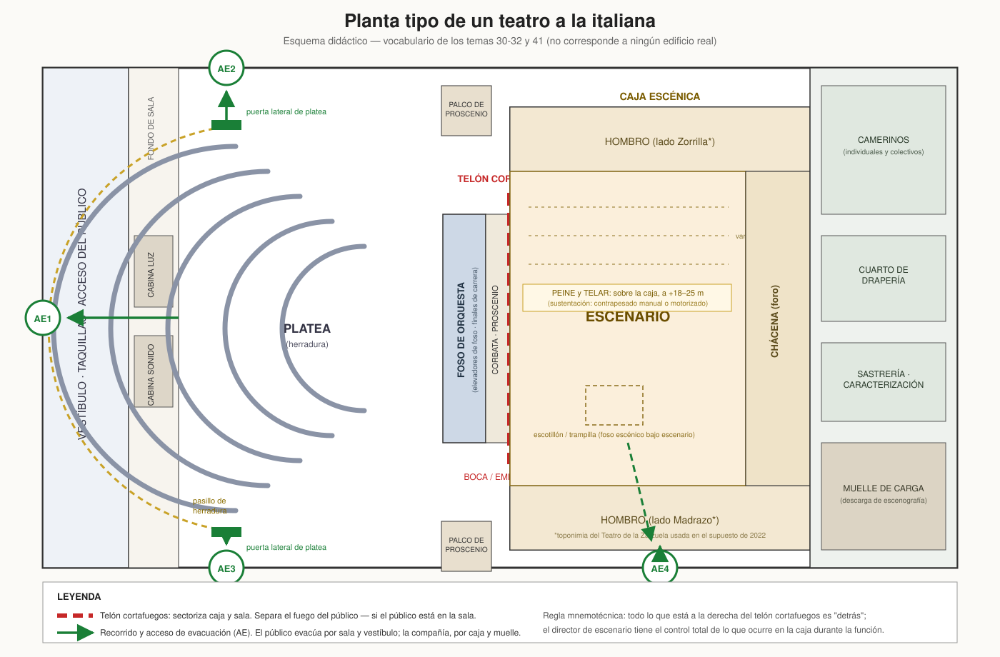
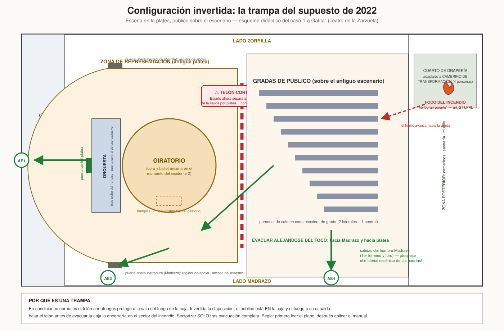
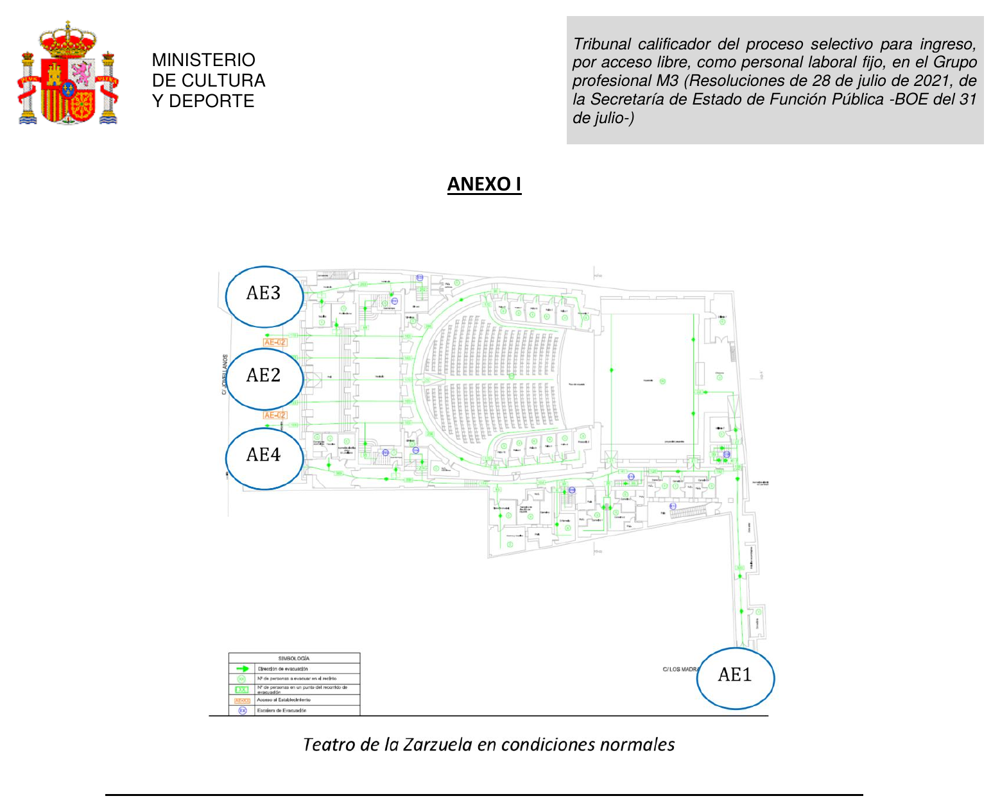
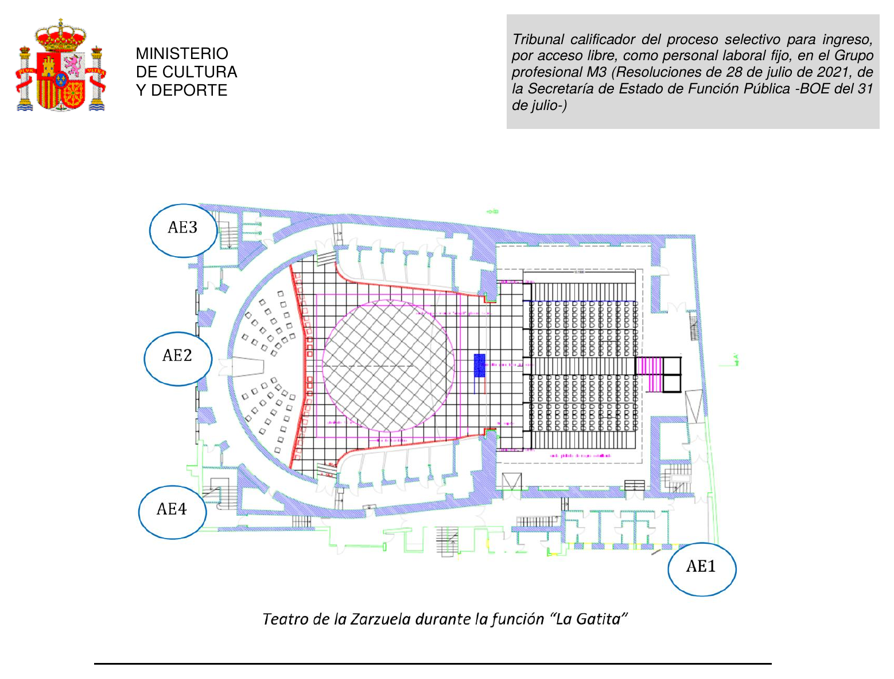

M3
v—Entra en tu espacio de estudio
Escribe el correo autorizado y recibirás un enlace de acceso. El progreso quedará sincronizado entre tus dispositivos.
M3 · Industrias culturales
Modo Historia
19 unidades ordenadas según la distribución aprobada. Supera los temas y el cuestionario final para desbloquear la siguiente unidad.
Material oficial anterior
El selector histórico reúne cuestionarios oficiales M3 y material técnico M1 del Ministerio de Cultura. Se conservan para practicar y comparar; no sustituyen al temario M3 ni al formato vigente.
Dossier de estudio del supuesto práctico: hipótesis histórica, plantillas de resolución y entrenamiento.
Material práctico · espacio escénico
Planos del supuesto de 2022 y esquemas didácticos para trabajar el vocabulario de los temas 30–32 y la prevención del tema 41.




Los planos reales se conservan para uso personal y como ejercicio de lectura del supuesto práctico. Los esquemas didácticos son material original.
Biblioteca de estudio
Documentos explicativos para estudiar el temario, entender las fuentes y preparar el supuesto práctico.
Normas del temario
Consulta cada norma ordenada por bloque, con resumen sencillo, títulos, artículos y anclas estables. Cuando la convocatoria delimite epígrafes, la app mostrará solo ese alcance verificado.